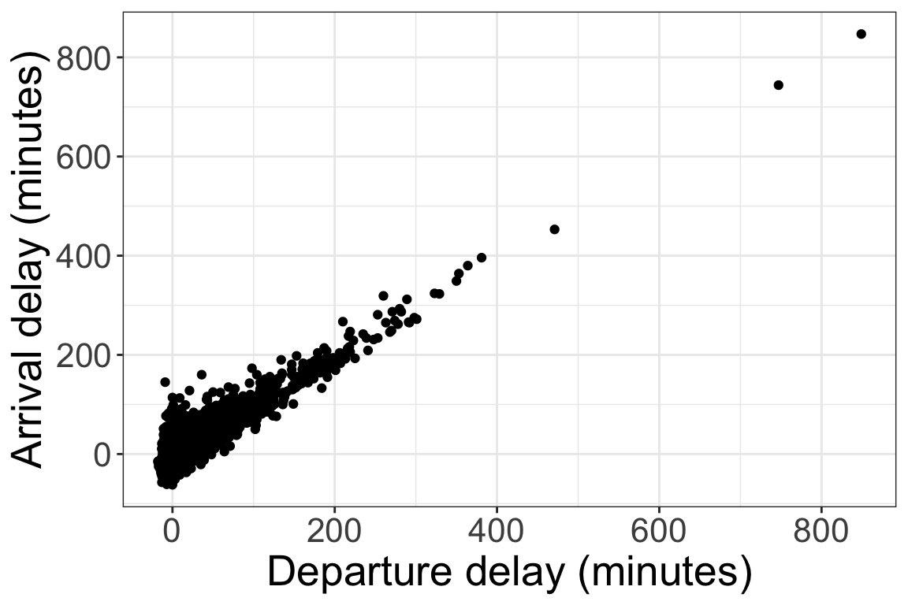

library(nycflights13)
library(tidyverse)Activity: Data wrangling with NYC flights
Instructions:
- Work with a neighbor to answer the following questions
- To get started, download the class activity template file
- When you are finished, render the file as an HTML and submit the HTML to Canvas (let me know if you encounter any problems)
In this activity, you will practice using dplyr functions for data manipulation.
Packages
For this activity, we will need the nycflights13 and tidyverse package. Recall that you can load these packages with
If a package is not installed, recall that you can install it with install.packages. For example:
install.packages("nycflights13")Important: Never include install.packages in a Quarto or R Markdown file! This only needs to be run in the R console.
Data
You will work with the flights data from the nycflights13 package. Run the following code in your console to learn more about the flights dataset:
?flightsQuestions
Flights departing late will probably arrive late. We can look at the relationship between departure delay and arrival delay with a scatterplot:

One way to summarize the relationship between two quantitative variables is with the correlation, which measures the strength of the linear relationship between the two variables. Correlation is a number between -1 and 1; a correlation close to -1 indicates a strong negative relationship, while a correlation close to 1 indicates a strong positive relationship, and a correlation of 0 indicates no relationship.
- In R, we calculate correlation with the cor function. Fill in the code below to calculate the correlation between departure delay and arrival delay (
use = "complete.obs"means “Ignore the rows with NAs in either of the two variables”):
flights |>
summarize(delay_cor = cor(..., ..., use = "complete.obs"))- Does the correlation between departure delay and arrival delay depend on which airport the flight departs from? We can use the
group_byfunction to group the data before calculating correlation. Fill in the code below to calculate the correlation for each airport (EWR, JFK, and LGA).
flights |>
group_by(...) |>
summarize(delay_cor = cor(..., ..., use = "complete.obs"))- How does the amount of time gained vary across airlines? Fill in the following code to calculate the average time gained and the standard deviation of time gained for each airline.
flights |>
mutate(time_gained = ...) |>
group_by(...) |>
summarize(avg_time_gained = ...,
sd_time_gained = ...)- Now let’s look more at the different airlines. Which airport is the most common departure airport for American Airlines (AA) flights? Fill in the following code (you may need to look up documentation for the
countfunction!).
flights |>
filter(... == "AA") |>
count(...)- Occasionally, flights actually depart early. How many American Airlines flights departed early?
flights |>
filter(carrier ..., dep_delay ...) |>
count()Hint: in the previous question you used the logical operator == in your filter. Here is a table of other logical operators:
| operator | definition | operator | definition |
|---|---|---|---|
< |
less than | x | y |
x OR y |
<= |
less than or equal to | is.na(x) |
test if x is NA |
> |
greater than | !is.na(x) |
test if x is not NA |
>= |
greater than or equal to | x %in% y |
test if x is in y |
== |
exactly equal to | !(x %in% y) |
test if x is not in y |
!= |
not equal to | !x |
not x |
x & y |
x AND y |
- How many American Airlines flights had a departure delay of between 0 and 10 minutes?